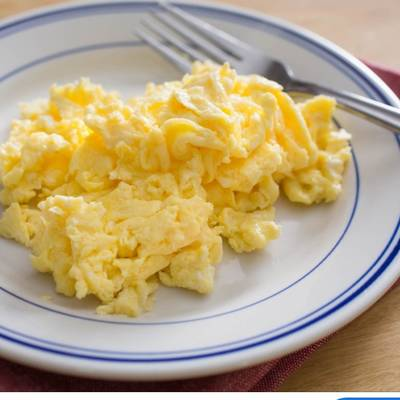

Eggs

Description
A simple guide to eggs (safe for beginners!)
Ingredients
- Eggs
- Spray oil
- Salt and Pepper (S&P)
Steps
- Crack eggs into a bowl, start with two if this is your first time (with practice you can gradually add more eggs as tolerated).
- Take any fork from your kitchen drawer and slap eggs back and forth until yolks liquid.
- Heat pan on medium heat, then spray oil into pan when hot (light coating).
- Pour liquid eggs into pan.
- Using spatula, fold eggs over and chop to preferred consistency.
- Add S&P to taste. Beginners beware of salt, use caution. Pepper is safe.